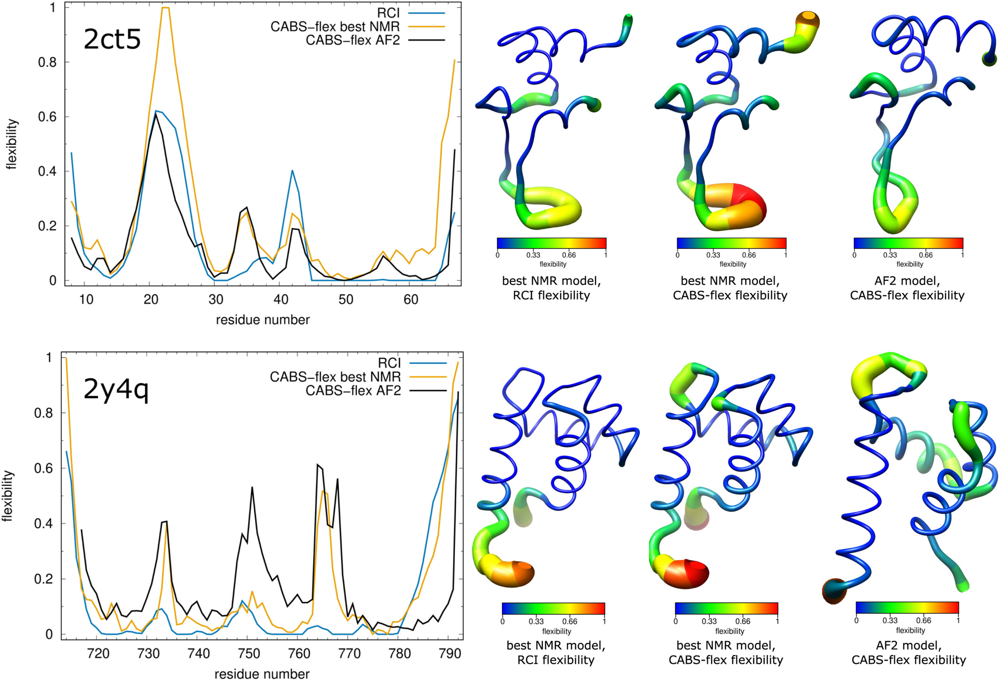
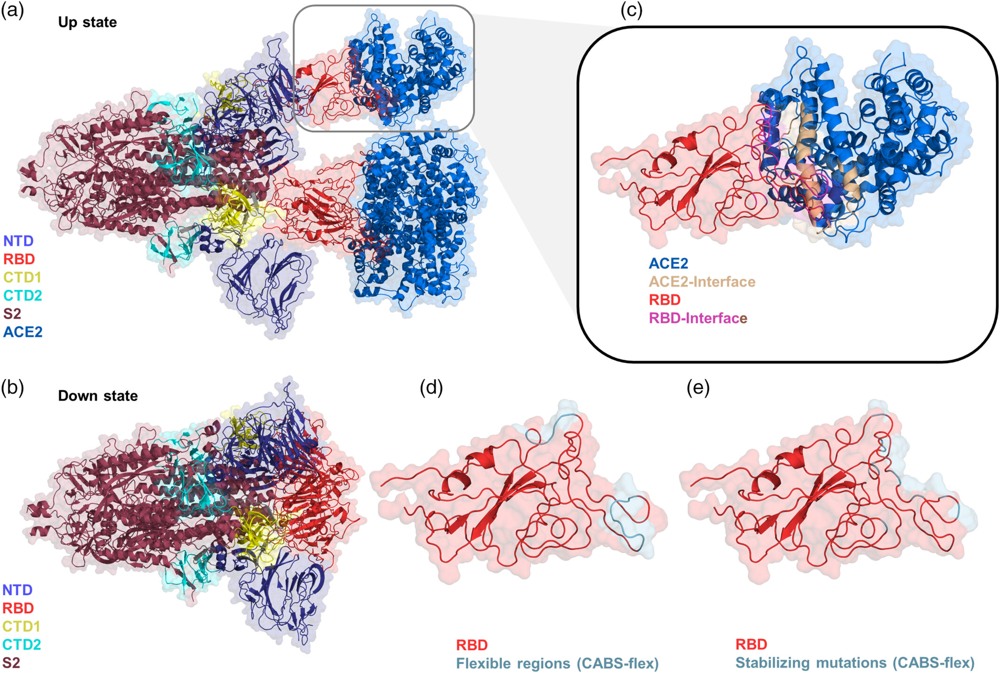
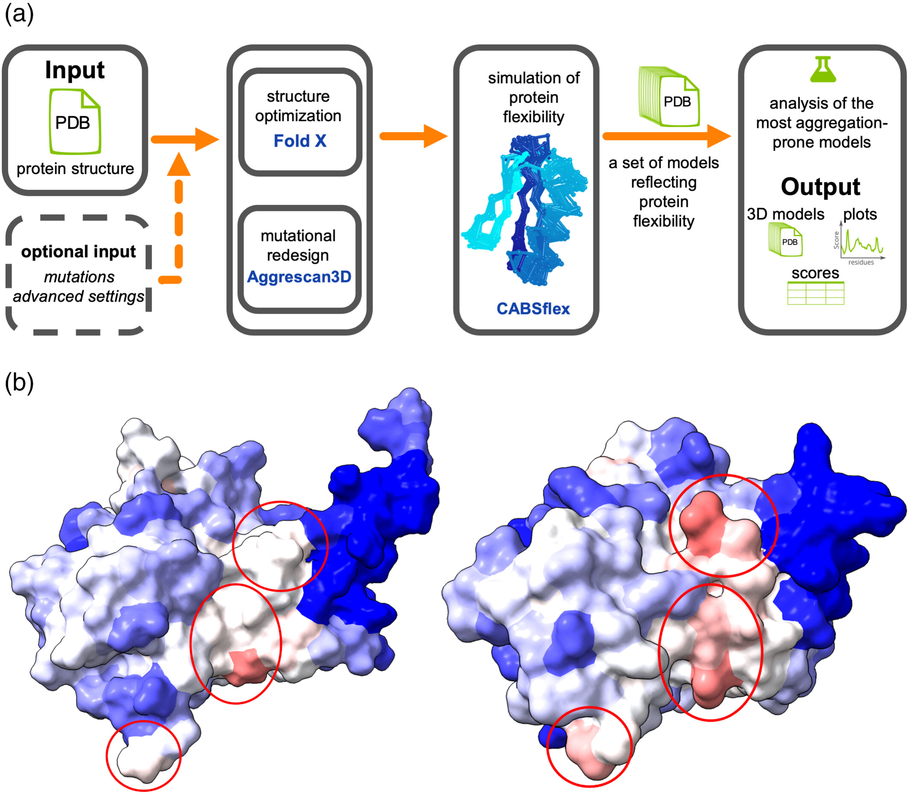
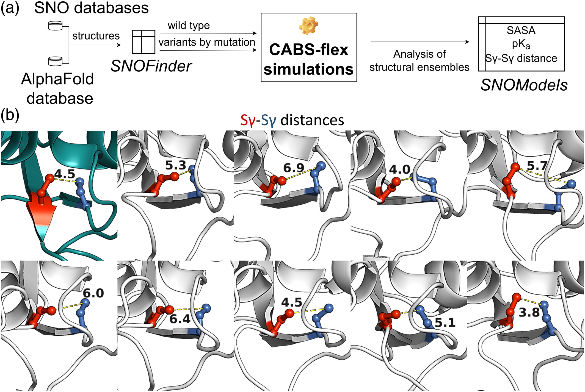
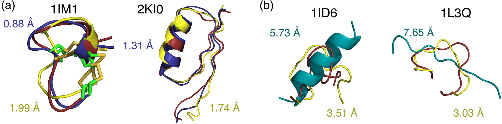
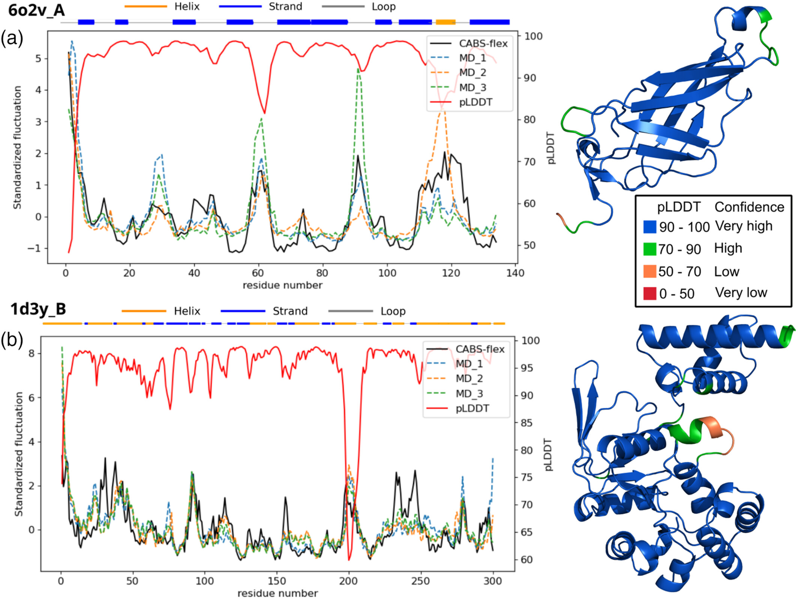

Applications - Case Studies¶
This page details practical applications of CABS-flex in exploring protein structure, dynamics, and function, based on the publication: Exploring protein functions from structural flexibility using CABS‐flex modeling (Nithin et al., 2024).
1. Modeling the flexibility of globular protein structures¶
CABS-flex provides a computationally efficient alternative to all-atom Molecular Dynamics (MD) for simulating the fluctuation profiles of folded globular proteins. Its coarse-grained methodology produces flexibility patterns that align well with both MD simulations and NMR ensembles. In a comparative analysis of AlphaFold2 (AF2) predictions versus NMR structures, CABS-flex simulations were utilized to validate structural accuracy against Random Coil Index (RCI) data. For example, in the case of PDB ID 2ct5, the flexibility profile generated by CABS-flex for the AF2 model showed a higher correlation with experimental RCI data than the corresponding NMR ensemble, particularly in correctly identifying flexible residues 18-28. This highlights the utility of CABS-flex dynamics as an independent validation metric for structural models, capable of distinguishing between model artifacts and true biological flexibility (Jamroz et al., 2014). Flexibility profiles computed from RCI compared with CABS-flex simulations for NMR and AlphaFold2 models are shown in the figure below. The top panel shows PDB ID 2ct5 NMR model 3 and AF2 model (UniProt: O96006) while the bottom panel shows PDB ID 2y4q NMR model 3 and AF2 model (UniProt: Q13563). In the right panels, the color and the thickness of the tube representation are proportional to the flexibility of each residue. RCI stands for random coil index.

2. Structure–function analysis of protein complexes: Interactions and mutational dynamics¶
Protein-protein interactions are often governed by dynamic conformational changes that are not evident in static crystal structures. CABS-flex allows for the modeling of these dynamics to elucidate binding mechanisms and the functional impact of mutations. A prominent application involves the SARS-CoV-2 Spike (S) protein, shown in the figure below in both its receptor-accessible "up" conformation (panel a, PDB ID: 7a98 bound to ACE2) and its receptor-inaccessible "down" conformation (panel b, PDB ID: 7df3 without binding to ACE2). The trimeric structure consists of an N-terminal S1 subunit—comprising the NTD (blue), RBD (tv_red), CTD1 (yellow), and CTD2 (cyan)—and a C-terminal S2 subunit (raspberry). Interaction with the ACE2 receptor occurs specifically through the light magenta residues on the RBD and wheat residues on the receptor (panel c). CABS-flex simulations revealed significant flexibility in the distal ends of the binding motif, providing insights into the enhanced affinity of variants like Omicron (Ortega et al., 2022). Furthermore, the trajectories identified residue clusters (441–445, 477–484) where high flexibility suggests a significant role in viral evolution (Sanyal et al., 2022), as well as specific stabilizing mutations like V503D (Mishra et al., 2022) that enhance the complex's stability. This demonstrates how CABS-flex complements static analysis by mapping dynamic hotspots crucial for understanding virus-host interactions.

3. Exploring allosteric mechanisms through integrative computational modeling¶
Allosteric regulation involves signal transmission across a protein structure, often mediated by subtle conformational changes and hinge motions. CABS-flex identifies regions of significant inherent flexibility that frequently correspond to allosteric sites. In studies of the Hsp90 chaperone system, CABS-flex was integrated with atomistic simulations to map conformational landscapes, identifying dynamic regions critical for the recruitment and integration of client proteins (Verkhivker, 2022b). Similarly, in Plasmodium falciparum Hsp70s, CABS-flex highlighted flexibility patterns indicative of allosteric modulation sites (Amusengeri et al., 2019), which were subsequently verified by extensive MD simulations. By modeling the "up/down" state transitions of the SARS-CoV-2 Spike protein RBD, CABS-flex also helped map potential allosteric communication pathways (Verkhivker and Di Paola, 2021a), demonstrating its value in exploring conformational landscapes in complex systems.
4. Structure-based prediction of aggregation-prone regions (APRs)¶
Protein aggregation is often initiated by local structural fluctuations that expose hydrophobic regions which are buried in the native state. CABS-flex serves as the simulation engine for the "Dynamic Mode" of the Aggrescan3D (A3D) method (Kuriata et al., 2019a). Unlike static analysis, which evaluates aggregation propensity based solely on a single structure, the dynamic approach accounts for conformational fluctuations. For the human p53 DNA-binding domain (PDB ID: 2fej), static analysis failed to reveal all potential APRs. However, incorporating CABS-flex dynamics unveiled hidden APRs that match experimental aggregation data (Zambrano et al., 2015). This dynamic profiling is crucial for the rational design of soluble protein variants and for predicting aggregation risks in therapeutic proteins. The Aggrescan3D "dynamic mode" pipeline is shown in the figure below (panel a), where the input structure's flexibility is simulated using CABS-flex to generate a conformational ensemble; these models are then scored based on aggregation propensity, with the highest-scoring model presented as the final prediction. Panel (b) compares aggregation propensity predictions for the human p53 DNA-binding domain (PDB ID: 2fej) using "static mode" (left) versus "dynamic mode" (right), where residues are colored from blue (solubility) to red (aggregation), with key aggregation-prone regions encircled.

5. Structure-based prediction of S-nitrosylation sites¶
S-nitrosylation (SNO) is a reversible post-translational modification of cysteine residues that plays a key role in cellular signaling. The susceptibility of a cysteine to SNO depends not only on its sequence context but also on its spatial accessibility and proximity to other thiol groups. CABS-flex ensembles provide a description of the structural environment of cysteine residues. In the case of the mitochondrial chaperone TRAP1, an ensemble of 20 CABS-flex models was generated to analyze the spatial proximity of Cys501 and Cys527 (Papaleo et al., 2023). The analysis revealed that structural fluctuations bring these cysteines into sufficient proximity to form a disulfide bridge, a fluctuation-dependent property that regulates the protein's function. This demonstrates how CABS-flex ensembles can facilitate the structure-based prediction of PTM sites. The workflow (panel a) integrates SNOfinder for identifying susceptible proteins, CABS-flex for generating 20-model structural ensembles, and SNOmodel for calculating key biochemical parameters to enhance the understanding of S-nitrosylation mechanisms. Panel (b) illustrates the conformational dynamics of the mitochondrial chaperone TRAP1 (deep teal) with models from the CABS-flex ensemble shown in white; stick-and-ball representations highlight the S-nitrosylated cysteine (SNO, red) and the proximal cysteine (marine), alongside the fluctuating Sγ-Sγ distances between them.

6. Structure prediction of linear and cyclic peptides¶
While deep learning methods like AlphaFold have revolutionized protein structure prediction, they can sometimes struggle with peptides that exhibit diverse conformational behaviors or fall outside the training distribution. CABS-flex offers a physics-based sampling approach for the de novo structure prediction of linear and cyclic peptides (Badaczewska-Dawid et al., 2024b). In a benchmark of 159 peptides, CABS-flex demonstrated the ability to effectively navigate the structural diversity of short peptides. In specific instances, particularly for flexible linear peptides, CABS-flex predicted conformations that were closer to experimental structures than those generated by AlphaFold2. This establishes CABS-flex as a robust tool for peptide modeling, requiring only the amino acid sequence as input. The figure below (panel a) shows example CABS-flex predictions (best out of 10,000 structures in blue, best of top 10 ranked structures in yellow) superimposed on experimental PDB structures in red. Panel (b) provides a direct comparison between CABS-flex predictions (yellow) and AlphaFold2 predictions (cyan) for flexible cases where the coarse-grained method identified conformations closer to the experimental data (red) than the deep learning baseline.

7. AlphaFold's pLDDT: Bridging predictive confidence and protein flexibility¶
AlphaFold's pLDDT score is a metric of local structural confidence, but it is often inversely correlated with structural flexibility. CABS-flex provides a complementary, physics-based perspective on protein dynamics. For protein 6o2v_A, a high correlation (0.86) was observed between CABS-flex RMSF profiles and standard MD simulations. Interestingly, the pLDDT scores inversely mirrored these RMSF profiles, confirming that regions of low predictive confidence often correspond to biologically relevant flexibility. In cases like protein 1d3y_B, where experimental data was missing for certain loops, low pLDDT scores indicated uncertainty. CABS-flex simulations correctly modeled the physical flexibility of these loops, allowing researchers to distinguish between model uncertainty and intrinsic structural dynamics (MD data from Vander Meersche et al., 2024). The figure below illustrates protein structure fluctuations from CABS-flex vs. MD runs alongside pLDDT confidence scores for proteins 6o2v_A (panel a) and 1d3y_B (panel b). On the right, pLDDT scores are visualized directly on the protein structures, highlighting how regions of low predictive confidence often map to the most flexible segments.

References¶
- Nithin C, Fornari RP, Pilla SP, Wroblewski K, Zalewski M, Madaj R, et al. Exploring protein functions from structural flexibility using CABS-flex modeling. Protein Science. 2024;33(9):e5090. doi:10.1002/pro.5090
- Jamroz M, Kolinski A, Kmiecik S. CABS-flex predictions of protein flexibility compared with NMR ensembles. Bioinformatics. 2014;30:2150–4. doi:10.1093/bioinformatics/btu184
- Ortega JT, Jastrzebska B, Rangel HR. Omicron SARS-CoV-2 variant spike protein shows an increased affinity to the human ACE2 receptor: an in silico analysis. Pathogens. 2022;11:45. doi:10.3390/pathogens11010045
- Sanyal D, Banerjee S, Bej A, Chowdhury VR, Uversky VN, Chowdhury S, et al. An integrated understanding of the evolutionary and structural features of the SARS-CoV-2 spike receptor binding domain (RBD). Int J Biol Macromol. 2022;217:492–505. doi:10.1016/j.ijbiomac.2022.07.022
- Mishra PM, Anjum F, Uversky VN, Nandi CK. SARS-CoV-2 spike mutations modify the interaction between virus spike and human ACE2 receptors. Biochem Biophys Res Commun. 2022;620:8–14. doi:10.1016/j.bbrc.2022.06.064
- Verkhivker GM. Conformational dynamics and mechanisms of client protein integration into the Hsp90 chaperone controlled by allosteric interactions of regulatory switches. J Phys Chem B. 2022b;126:5421–42. doi:10.1021/acs.jpcb.2c03464
- Amusengeri A, Astl L, Lobb K, Verkhivker GM, Tastan Bishop Ö. Establishing computational approaches towards identifying malarial allosteric modulators: a case study of Plasmodium falciparum Hsp70s. Int J Mol Sci. 2019;20:5574. doi:10.3390/ijms20225574
- Verkhivker GM, Di Paola L. Dynamic network modeling of allosteric interactions and communication pathways in the SARS-CoV-2 spike trimer mutants: differential modulation of conformational landscapes and signal transmission via cascades of regulatory switches. J Phys Chem B. 2021a;125:850–73. doi:10.1021/acs.jpcb.0c10637
- Kuriata A, Iglesias V, Pujols J, Kurcinski M, Kmiecik S, Ventura S. Aggrescan3D (A3D) 2.0: prediction and engineering of protein solubility. Nucleic Acids Res. 2019a;47:W300–7. doi:10.1093/nar/gkz321
- Zambrano R, Jamroz M, Szczasiuk A, Pujols J, Kmiecik S, Ventura S. AGGRESCAN3D (A3D): server for prediction of aggregation properties of protein structures. Nucleic Acids Res. 2015;43:W306–13. doi:10.1093/nar/gkv359
- Papaleo E, Tiberti M, Arnaudi M, Pecorari C, Faienza F, Cantwell L, et al. TRAP1 S-nitrosylation as a model of population-shift mechanism to study the effects of nitric oxide on redox-sensitive oncoproteins. Cell Death Dis. 2023;14:284. doi:10.1038/s41419-023-05780-6
- Badaczewska-Dawid A, Wroblewski K, Kurcinski M, Kmiecik S. Structure prediction of linear and cyclic peptides using CABS-flex. Brief Bioinform. 2024b;25:bbae003. doi:10.1093/bib/bbae003
- Vander Meersche Y, Cretin G, Gheeraert A, Gelly J-C, Galochkina T. ATLAS: protein flexibility description from atomistic molecular dynamics simulations. Nucleic Acids Res. 2024;52:D384–92. doi:10.1093/nar/gkad1084